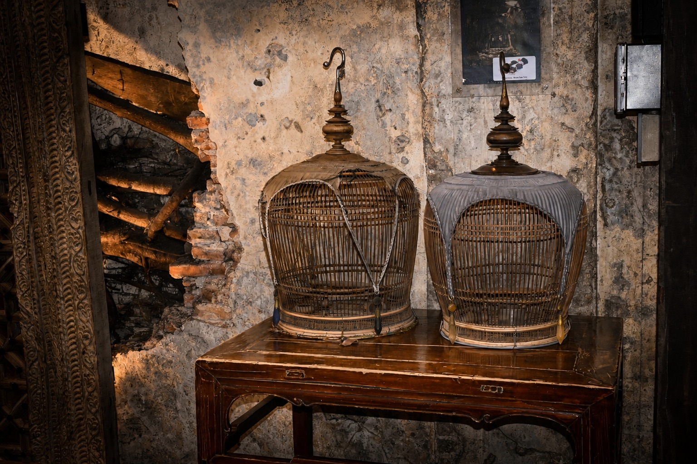
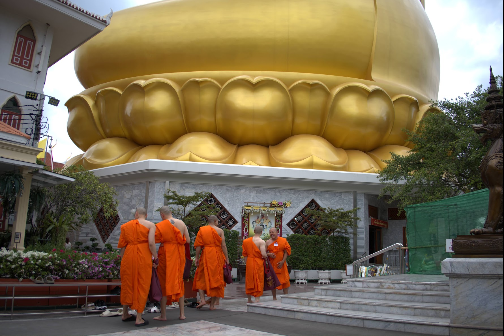
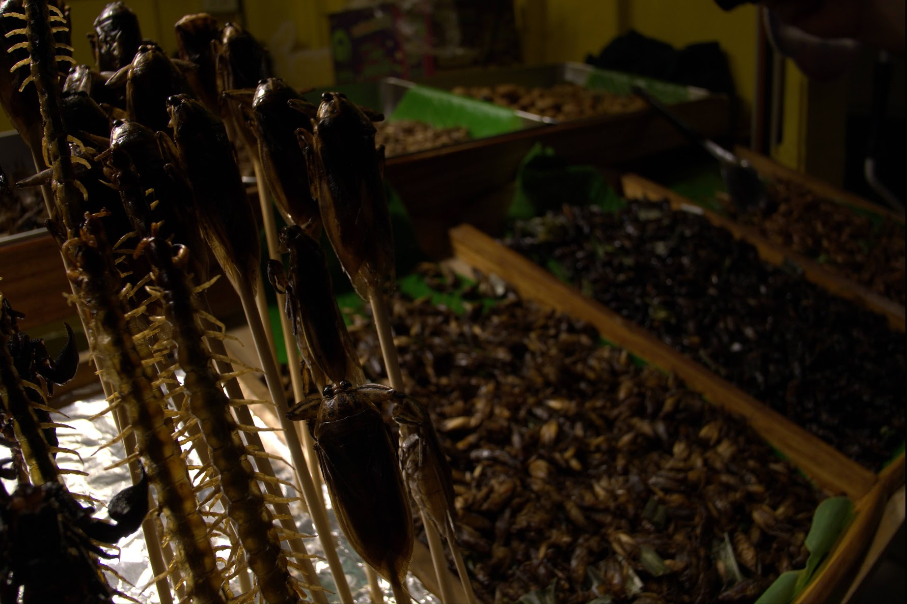
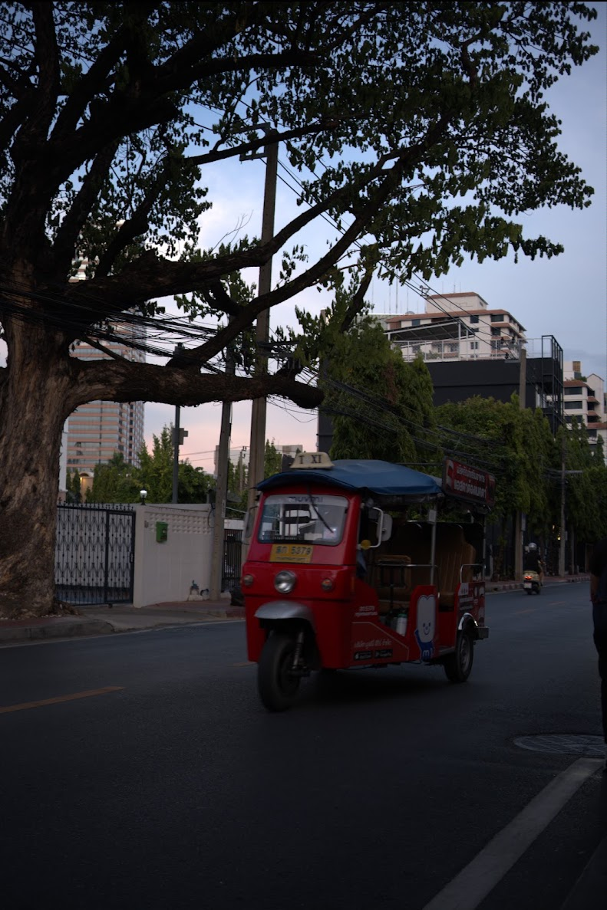
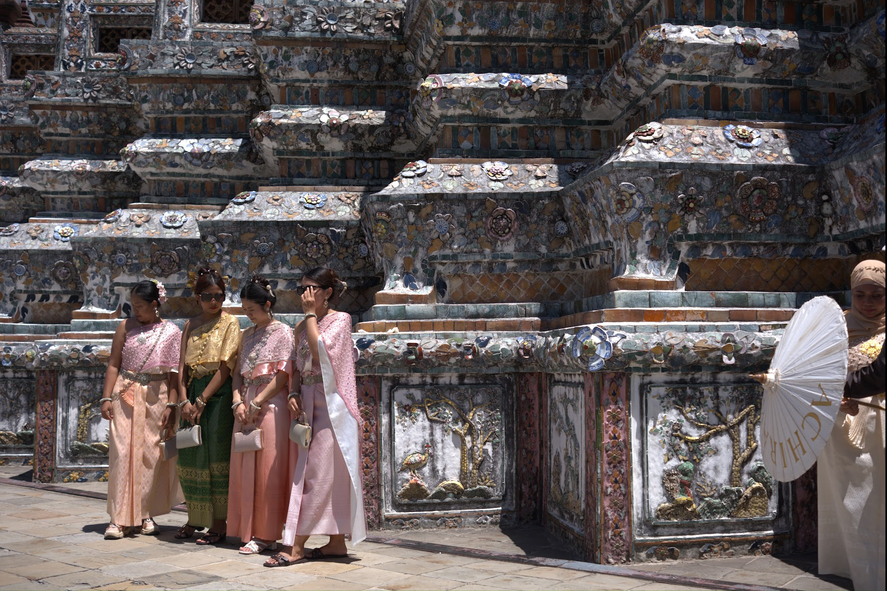
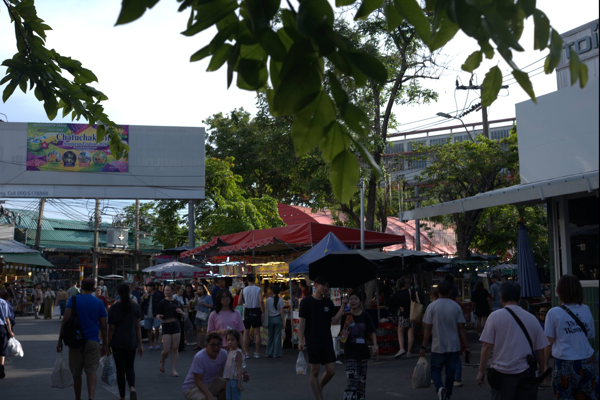

After Rain
Istanbul, Türkiye · 2026
Street · Travel · Documentary
Observations of people, places, and the quiet details that connect them.
View selected work ↓Selected work

Istanbul, Türkiye · 2026

Doha, Qatar · 2026

London, United Kingdom · 2025

Antalya, Türkiye · 2026

Paris, France · 2025

New York, United States · 2024
About
I am a photographer interested in street life, travel, and documentary storytelling. My work looks for small gestures, changing light, and the everyday moments that are often overlooked.
Through photographs, I try to create an honest record of place and atmosphere while leaving space for the viewer’s own interpretation.
Contact
For collaborations, licensing, or print inquiries, please contact me at your.email@example.com.